4. Enable Face Recognition on Kiosk

Features
- Check-ins and Check-outs utilizing Face Recognition
- Face Recognition On Kios Mode
- Capture Photograph while Log Attendance
Installation
- Copy attendance_face_recognition module to addons folder
- Install the module normally like other modules
1. Capture / Upload Employee Photographs on Employee Master
Employees --> Employee --> Face Recognition - Add
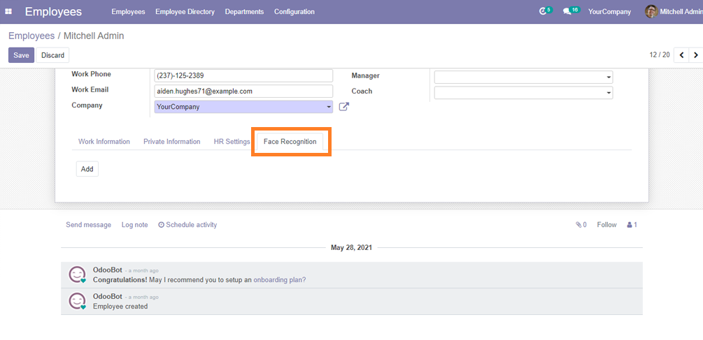
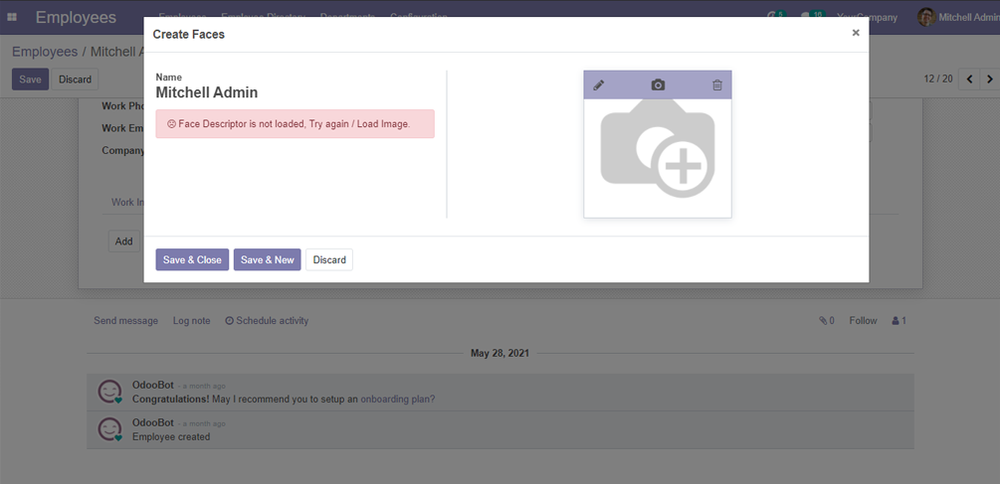
Capture Snapshot and wait for Load the Face Descriptors. (It will take some time to capture the Photo)
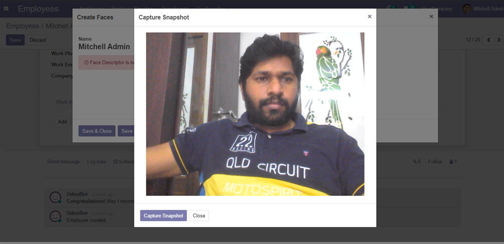
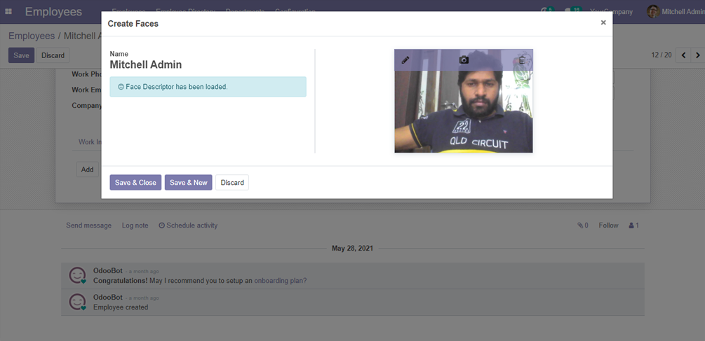

2. Enable Face Recognition
User Menu -> Face Recognition -> Enable Attendances Face Recognition
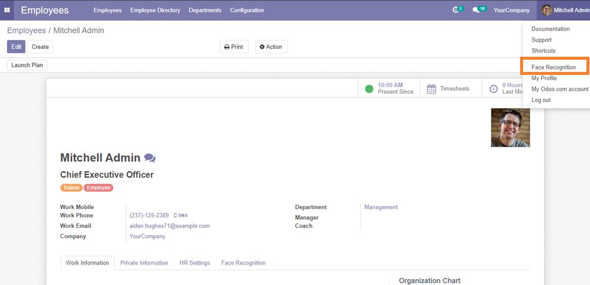
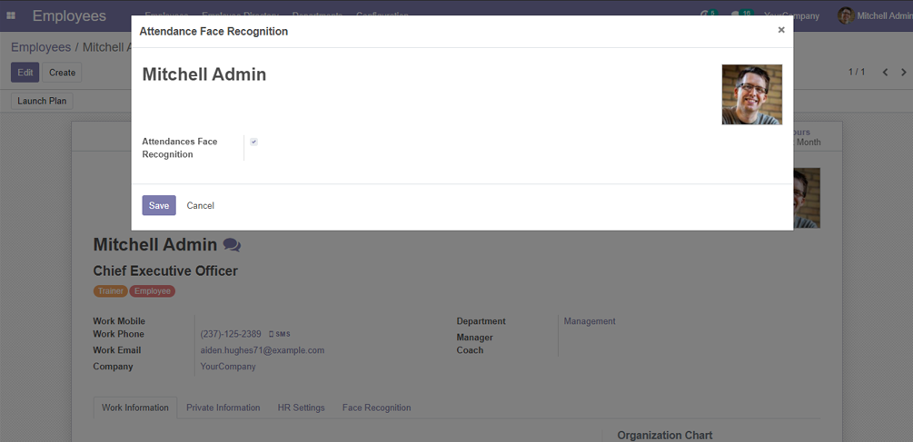
3. Attendance Using Face Recognition
Attendances -> Check In / Check Out
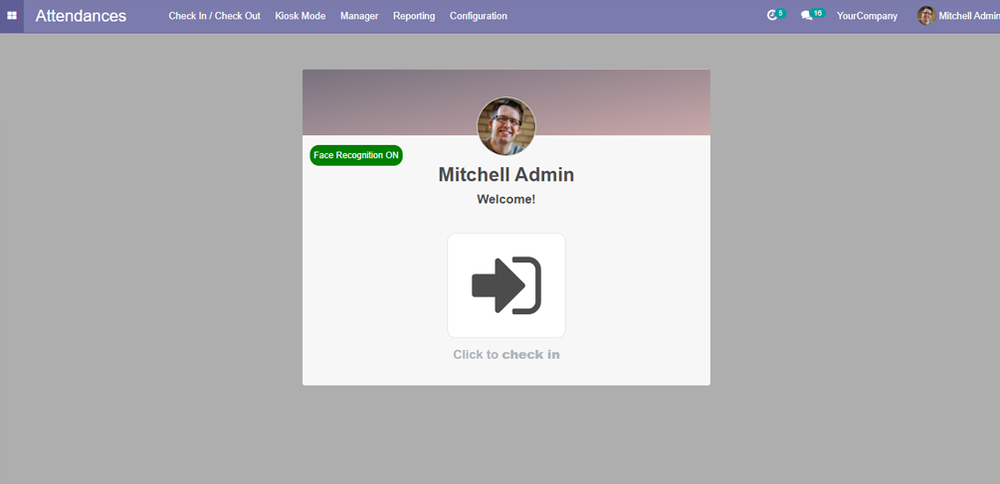
Popup will open for Recognise Employee Face
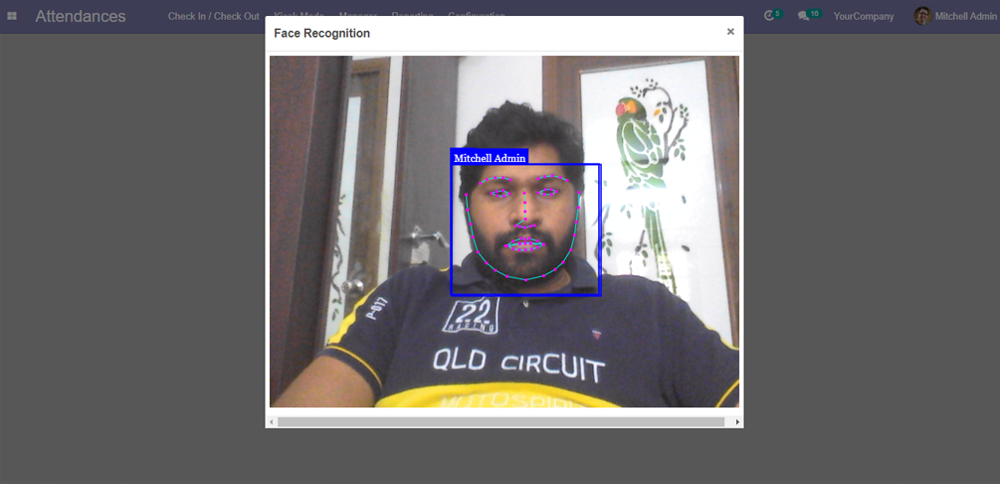
Attendance Check-ins and Check-outs save Captured images on Attendance
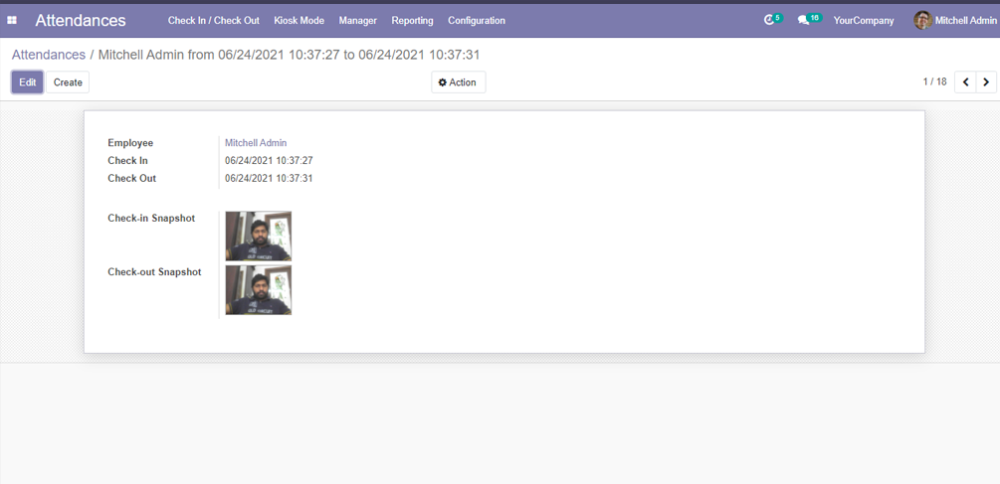
4. Enable Face Recognition on Kiosk
Attendances -> Configuration
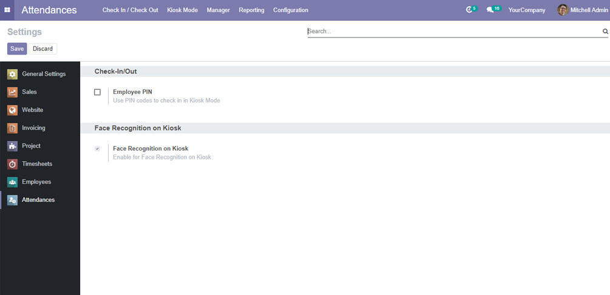
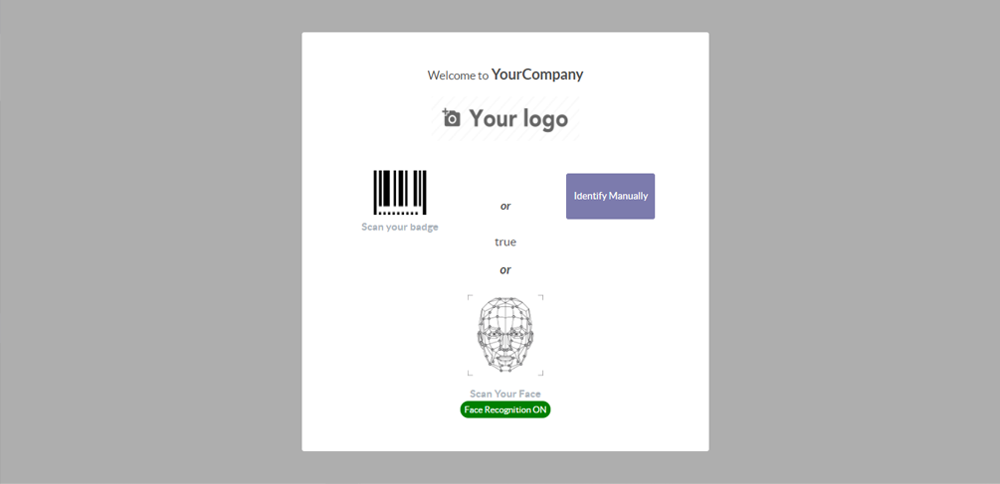